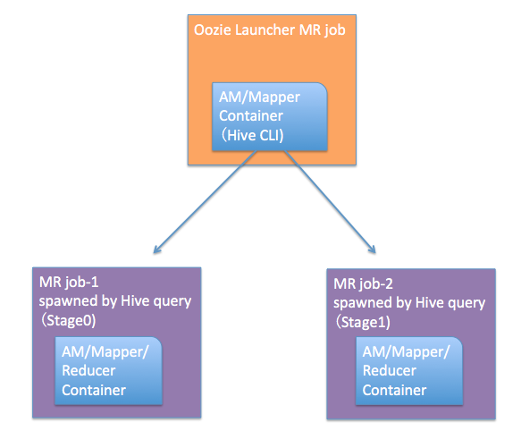
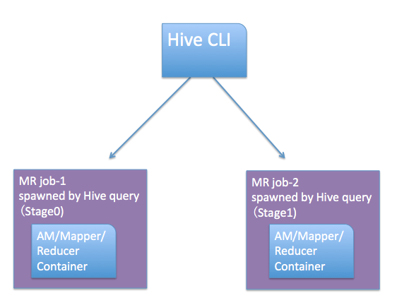

This documents all the tips, pitfalls I experienced along the way. Keep updating.
- Run python script by oozie
- checking oozie job, kill job
- oozie EL expression/function
- conflict of two libraries in two jars
- global configuration do NOT work with shell action
- Oozie memory setting
- Put multiple libpath in oozie job
Run python script by oozie
Need use distributed cache, to send the python script to all workers. The important workflow lines are:
<exec>script.py</exec>
<argument>arg1</argument>
<argument>arg2</argument>
...
<file>scripts/script.py#script.py</file>
The # means distribute the hdfs script file to the workers' local file system using the sepcified name.
The python script writes to the workers' local disk, no in the hdfs. The workaround is inside the python script, first write to a local temp file, then using subprocess to put the file onto hdfs, then delete the local temp file. This is the method I used for the LP_tunning_17 project.
- Hortonworks post for an oozie-python example
- The output location of shell/python in oozie workflow
- How to use shell and java action by cloudera. Pretty good
checking oozie job, kill job
oozie jobs | grep yu
oozie job -kill oozie-job-id
oozie EL expression/function
Oozie has some specific EL expression/function, which can be find from their documents. For the general EL expression/function, it is using JSP Expression Language syntax.. Check the JSP 2.0 specification to get the syntax.
conflict of two libraries in two jars
I encounter this issue when deploy an oozie workflow include both a giraph action and a spark action. Both action needs custom build jars dpp-giraph-0.0.1-with-giraph-core.jar, spark2.jar. I put these two jars in the lib\ folder in oozie standard way. But the workflow failed with strange error message as some library's versionId is not consistent.
It actually is because in these two custom built jar, we used the same library but with conflicting versions. The solution for this is NOT put the jar in the lib\folder, but copy the specific jar in each action stage using the <file> option.
Example:
<action name="preprocess">
<java>
<job-tracker>${jobTracker}</job-tracker>
<name-node>${nameNode}</name-node>
<prepare>
<delete path="${nameNode}${lpOutputPath}/sCut_${sCut}/labelPairs"/>
<delete path="${nameNode}${lpOutputPath}/sCut_${sCut}/sample"/>
<delete path="${nameNode}${lpOutputPath}/sCut_${sCut}/labelIds"/>
</prepare>
<configuration>
<property>
<name>mapred.job.queue.name</name>
<value>${queueName}</value>
</property>
</configuration>
<main-class>org.apache.spark.deploy.SparkSubmit</main-class>
<arg>--conf</arg>
<arg>spark.driver.maxResultSize=20g</arg>
<arg>--conf</arg>
<arg>spark.driver.memory=20g</arg>
<arg>--conf</arg>
<arg>spark.yarn.executor.memoryOverhead=10240</arg>
...
<arg>--driver-cores</arg>
<arg>4</arg>
<arg>--num-executors</arg>
<arg>30</arg>
<arg>--executor-memory</arg>
<arg>5g</arg>
<arg>--executor-cores</arg>
<arg>10</arg>
<!-- specify code source jar -->
<arg>spark2.jar</arg>
<!--input path-->
<arg>LP_tunning_17/spark_base/labelPairs</arg>
<arg>LP_tunning_17/spark_base/sample</arg>
<arg>LP_tunning_17/spark_base/labelIds</arg>
<arg>${sCut}</arg>
<!--output path-->
<arg>${lpOutputPath}/sCut_${sCut}/labelPairs</arg>
<arg>${lpOutputPath}/sCut_${sCut}/sample</arg>
<arg>${lpOutputPath}/sCut_${sCut}/labelIds</arg>
<!-- dependencies must be distributed cached and added to the job using 'jar' option above -->
<!-- this jar contains the code -->
<file>spark2.jar#spark2.jar</file>
</java>
<ok to="lp"/>
<error to="email-error"/>
</action>
<action name="lp">
<java>
<job-tracker>${jobTracker}</job-tracker>
<name-node>${nameNode}</name-node>
<prepare>
<delete path="${nameNode}${lpOutputPath}/sCut_${sCut}/${LPVersion}/lp-output"/>
</prepare>
<configuration>
<property>
<name>mapred.job.queue.name</name>
<value>${queueName}</value>
</property>
<property>
<name>mapreduce.map.memory.mb</name>
<value>${lpMemoryMB}</value>
</property>
<property>
<name>mapred.task.timeout</name>
<value>1800000</value>
</property>
<property>
<name>mapreduce.task.timeout</name>
<value>1800000</value>
</property>
<property>
<name>mapreduce.map.java.opts</name>
<value>-Xmx${lpHeap}m</value>
</property>
</configuration>
<main-class>com.adsymp.dpp.giraph.lp.LPRunner</main-class>
<arg>com.adsymp.dpp.giraph.lp.WeightedLPComputation</arg>
<arg>${lpZKList}</arg>
<arg>-eif</arg>
<arg>com.adsymp.dpp.giraph.LongFloatTextEdgeInputFormat</arg>
<arg>-eip</arg>
<arg>${lpOutputPath}/sCut_${sCut}/sample</arg>
<arg>-vof</arg>
<arg>org.apache.giraph.io.formats.IdWithValueTextOutputFormat</arg>
<arg>-op</arg>
<arg>${lpOutputPath}/sCut_${sCut}/${LPVersion}/lp-output</arg>
<arg>-w</arg>
<arg>${lpWorkers}</arg>
...
<arg>-ca</arg>
<arg>mapreduce.map.memory.mb=${lpMemoryMB}</arg>
<arg>-ca</arg>
<arg>mapreduce.map.java.opts=-Xmx${lpHeap}m</arg>
<file>dpp-giraph-0.0.1-with-giraph-core.jar#dpp-giraph-0.0.1-with-giraph-core.jar</file>
</java>
<ok to="postprocess"/>
<error to="email-error"/>
</action>
And in the folder: /home/yu/LP_tunning_17/sparkWorkflow
[yu@sc2-hive1 sparkWorkflow]$ ls
dpp-giraph-0.0.1-with-giraph-core.jar job_properties_template nohup.out scripts workflow.xml
job.properties lib oozie-runner.py spark2.jar
global configuration do NOT work with shell action
As given here the Global configuration supposed to avoid repetition. However, if it is a shell action, you still need repeat <job-tracker> and <name-node>
Wrong example
<?xml version="1.0"?>
<workflow-app xmlns="uri:oozie:workflow:0.4" name="alibaba">
<global>
<job-tracker>${jobTracker}</job-tracker>
<name-node>${nameNode}</name-node>
<configuration>
<property>
<name>mapred.job.queue.name</name>
<value>${queueName}</value>
</property>
</configuration>
</global>
<start to="base"/>
<action name="base">
<java>
<prepare>
<delete path="${nameNode}/${pairOut}/base" />
</prepare>
<main-class>ge.drawbrid.dpp.graph.miaozhen.pairing.Base</main-class>
<arg>mapred</arg>
<arg>${freqOut}/output/*</arg>
<arg>${pairOut}/</arg>
<arg>${ipdtThreshold}</arg> <!-- ipdt is always higher than ipwk -->
<arg>${numReducer}</arg>
<arg>${partnerId}</arg>
<arg>${partnerKey}</arg>
<file>${ipFile}#ip3-type.txt</file>
</java>
<ok to="end" />
<error to="email-error" />
</action>
<action name='train-cd'>
<shell xmlns="uri:oozie:shell-action:0.1">
<prepare>
<delete path="${nameNode}/${modelOut}/${version}/CD"/>
<mkdir path="${nameNode}/${modelOut}/${version}/CD"/>
</prepare>
<configuration>
<property>
<name>mapred.job.queue.name</name>
<value>${queueName}</value>
</property>
<property>
<name>oozie.launcher.mapreduce.map.memory.mb</name>
<value>32768</value>
</property>
<property>
<name>oozie.launcher.mapreduce.map.java.opts</name>
<value>-Xmx32256m</value>
</property>
<property>
<name>mapreduce.task.timeout</name>
<value>36000000</value>
</property>
</configuration>
<exec>train.py</exec>
<argument>${rankOut}/${version}/features-all/CD</argument>
<argument>${modelOut}/${version}/CD</argument>
<env-var>HADOOP_USER_NAME=${wf:user()}</env-var>
<file>${trainScript}#train.py</file>
<capture-output/></shell>
<ok to="pred-cd" />
<error to="email-error" />
</action>
The second action will fail, and will see error message like this:
Error: E0701 : E0701: XML schema error, cvc-complex-type.2.4.a: Invalid content was found starting with element 'prepare'. One of '{"uri:oozie:shell-action:0.1":job-tracker}' is expected.
For the shell action, we still need repeat <job-tracker> and <name-node>. Correct code:
<action name='train-cd'>
<shell xmlns="uri:oozie:shell-action:0.1">
<job-tracker>${jobTracker}</job-tracker>
<name-node>${nameNode}</name-node>
<prepare>
<delete path="${nameNode}/${modelOut}/${version}/CD"/>
<mkdir path="${nameNode}/${modelOut}/${version}/CD"/>
</prepare>
<configuration>
<property>
<name>mapred.job.queue.name</name>
<value>${queueName}</value>
</property>
<property>
<name>oozie.launcher.mapreduce.map.memory.mb</name>
<value>32768</value>
</property>
<property>
<name>oozie.launcher.mapreduce.map.java.opts</name>
<value>-Xmx32256m</value>
</property>
<property>
<name>mapreduce.task.timeout</name>
<value>36000000</value>
</property>
</configuration>
<exec>train.py</exec>
<argument>${rankOut}/${version}/features-all/CD</argument>
<argument>${modelOut}/${version}/CD</argument>
<env-var>HADOOP_USER_NAME=${wf:user()}</env-var>
<file>${trainScript}#train.py</file>
<capture-output/></shell>
<ok to="pred-cd" />
<error to="email-error" />
</action>
Here is the stackoverflow post
Oozie memory setting
- oozie.launcher.mapreduce.map.memory.mb
- oozie.launcher.mapreduce.map.java.opts
- oozie.launcher.yarn.app.mapreduce.am.resource.mb
- oozie.launcher.mapreduce.map.java.opts
The above 4 parameters set in workflow.xml for each Oozie job controls oozie memory.
- This is the Oozie case

- This is the normal case

Put multiple libpath in oozie job
Use , as delimiter.
in job.properties, set:
oozie.libpath=/path/to/jars,another/path/to/jars
oozie.use.system.libpath=true
Stackoverflow post
Original post